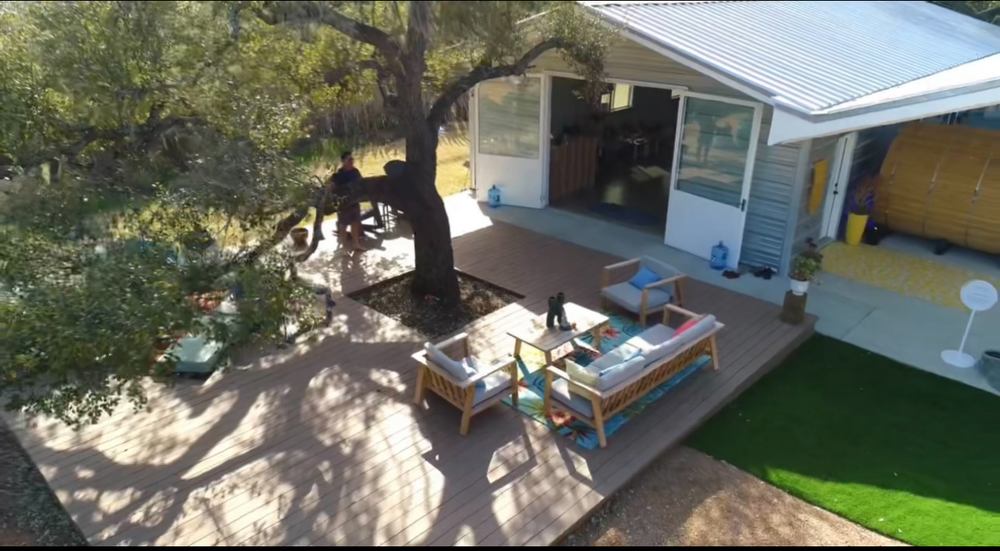
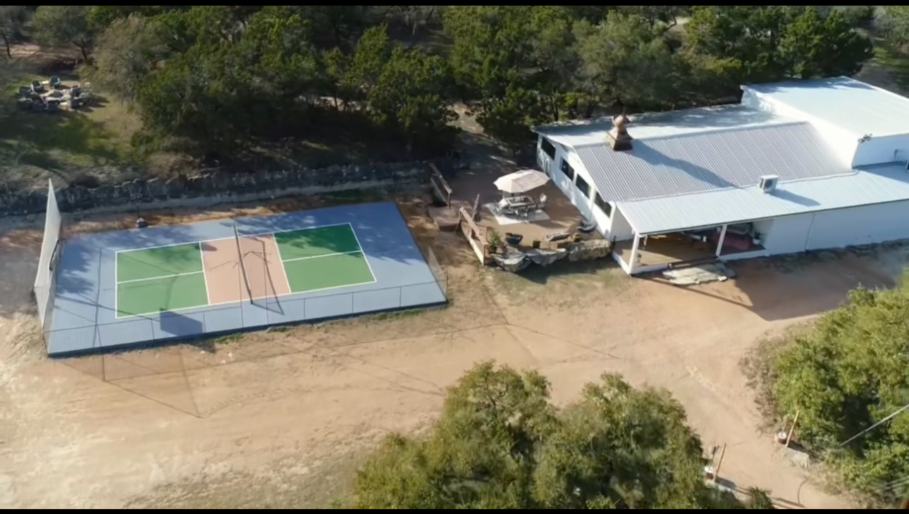
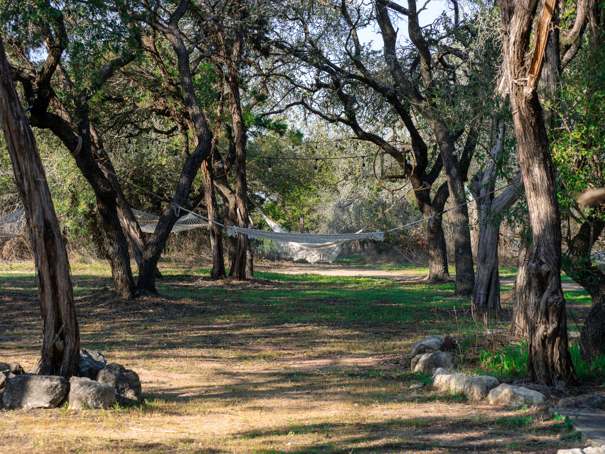

Amenities
Open to every guest.
The wellness facilities and lodging that come with any stay or membership. No appointment, no add-on charge — use them as much as you want.

Cedar Sauna
Traditional barrel sauna under the live oaks. Open daily, fits up to six. Pair with the cold plunge for a proper contrast cycle.

Cold Plunge & Hot Tub
A 38-45°F plunge tub paired with a deep hot tub, framed by the wellness courtyard. The most-used space on the property.

Pool
A long swimming pool for laps in the morning, lounging in the afternoon. Heated through the cooler months.

Wellness Center
The dedicated building for bodywork, integration, and one-on-one sessions. Quiet rooms, soft light, and a tea bar for between visits.

Pickleball Court
A full-size pickleball court tucked between the gardens. Paddles and balls in the basket courtside — play whenever you like.

Hammock Garden
A grove of strung hammocks under the oaks — the quietest, most-claimed afternoon napping spot on the ranch.

Retreat House
The main residence. Private and shared rooms, a chef's kitchen, a wraparound porch, and the long farmhouse table where everyone eats.

Yurts
Private circular cabins tucked into the trees. Wood floors, soft beds, windows full of sky. For guests who want quiet.

Geodesic Dome
A geodesic shelter at the edge of the meadow. Doubles as overnight lodging and a movement studio for retreat groups.